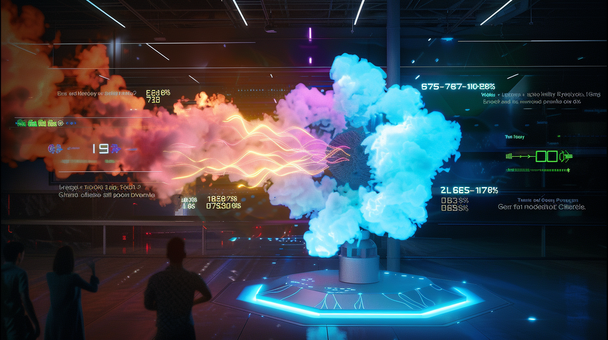

Delivered
The Energy Flower (Fingrid)
Challenge:
The national grid operator had to show “how electricity moves” in real time.
Most people can’t picture the grid at all.
What we built:
A big light sculpture that literally “breathes” with live grid data.
When demand spikes, it pulses. When wind ramps up, colour shifts.
Result:
School kids, press, politicians — everyone saw the same thing.
Fingrid said talks about renewables are now “faster and calmer”.
Impact: less time defending the system, smoother stakeholder meetings, easier public buy-in.